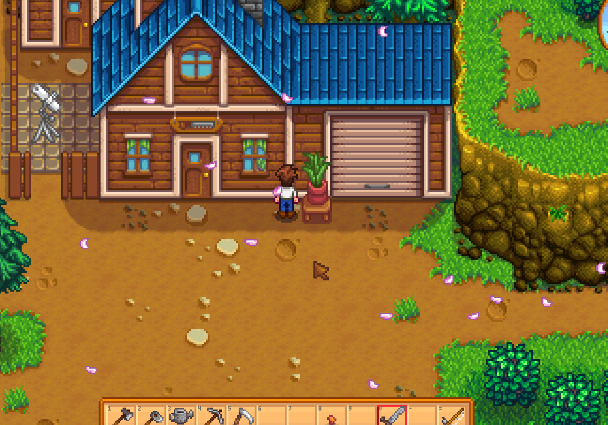
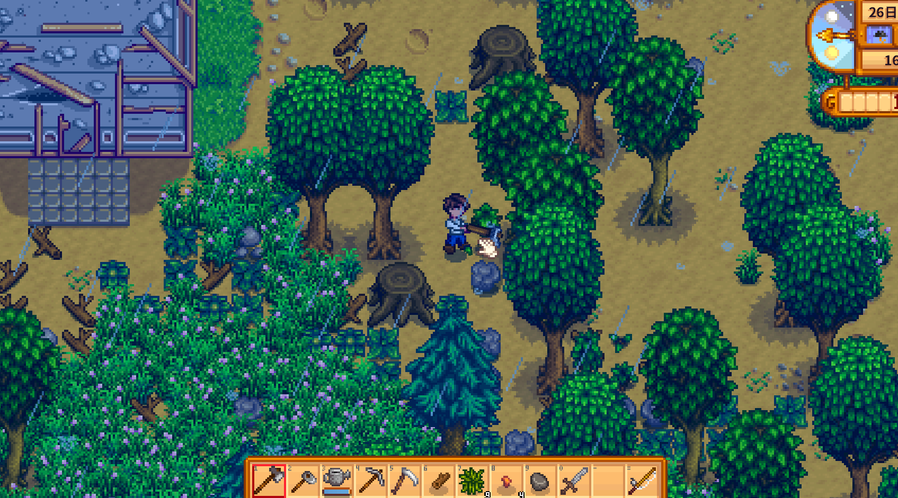
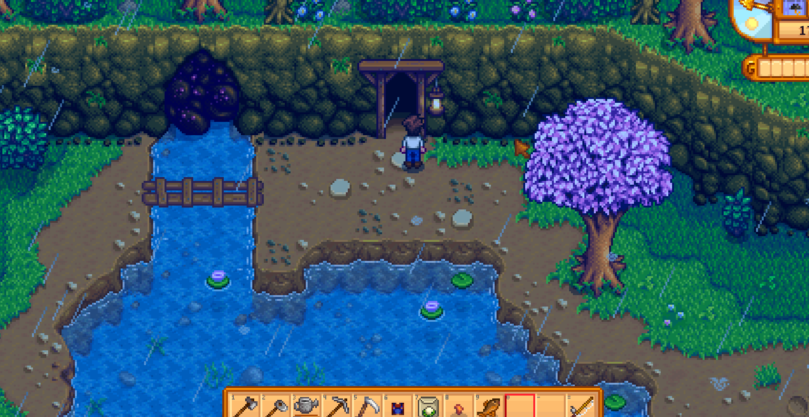

Quick answers (read this first)
- Robin’s carpenter shop is in the mountains (north of town), near the mines path.
- She builds farm buildings and can upgrade your house—check gold + wood requirements in her menu.
- Early priority is usually chests / storage comfort and only then bigger builds.
- Construction takes days—plan around it.
- Do not spend every log on cosmetics while the crop patch is still tiny.
Who this is for
Use this if you cannot find Robin or feel pressured to build a barn on week two. Many new players stumble into the mountains for the mines and never realize the blue-roof building next door is the carpenter shop. Robin handles farm buildings, house upgrades, and furniture crafting—she is the gatekeeper for animals, silos, and eventually your kitchen.
Version note: Stardew Valley 1.6 keeps Robin’s core menu intact with broader QoL improvements elsewhere. Always verify wood, gold, and stone costs in her shop UI before confirming; this guide teaches purchase order and habits, not exact price tables that can shift with your mod load or platform.
Pros & cons of early carpenter spending
| Details | |
|---|---|
| Pros | Real farm quality-of-life; animals later; house upgrades unlock kitchen eventually; silo supports hay storage. |
| Cons | Huge wood and gold sinks; multi-day builds block new projects; easy to overbuild before crop income stabilizes. |
| Use when | Seed loop is stable and inventory chaos hurts more than missing livestock. |
| Skip when | You still need backpack space or seeds more than a coop. |
Finding Robin and reading her shop
Walk north from Pelican Town into the mountain area. Robin’s carpenter shop sits along the path toward the mines entrance—look for the home with the blue roof and the construction yard outside. She keeps regular shop hours; showing up at midnight wastes a trip.
Inside, browse two mental categories: farm buildings (coop, barn, silo, etc.) and house upgrades (more rooms, kitchen access later). Furniture crafting is tempting decoration—fine when you are flush, but not when you are still buying parsnip seeds every week.
Interactive checklist
Safe to skip (anti-FOMO)
- Day-one barn or coop before you can water consistently.
- Decorative furniture sprees that drain wood you need for real builds.
- House upgrades before seed money feels comfortable.
- Ordering a silo and a barn the same week if wood income is still random.
Decision table
| Want… | Buy/build… | Wait… |
|---|---|---|
| Less inventory pain | Chests (+ backpack at Pierre’s) | Barn |
| Animals | Coop/barn when chores are easy | Week 1 impulse |
| Kitchen / house space | House upgrade when gold allows | If seeds are missing |
Build priority table
Use this as a calm Year 1 sequence—not a speedrun mandate. Adjust if you love animals or hate inventory clutter.
| Stage | Typical buy | Why first |
|---|---|---|
| Early Spring | Chests (crafted) + backpack | Stops daily inventory panic |
| Mid Spring / Summer | Silo when animals are planned | Hay storage before winter stress |
| When chores are easy | Coop | Smaller step than a full barn |
| Comfortable gold | House upgrade | Kitchen and space for later cooking |
| After coop routine works | Barn | Bigger animals, bigger daily loop |
Material habit table
| Material | Year 1 source | Spend on |
|---|---|---|
| Wood | Farm clearing, forest chops | Buildings and chests |
| Stone | Mines, farm rocks | Robin builds that require stone |
| Hardwood | Later forest / upgrades | Do not budget builds you cannot fuel yet |
| Gold | Crops and fishing | Confirm in menu before clicking buy |
Real screenshots

Game screenshot © ConcernedApe — used for guide commentary

Game screenshot © ConcernedApe — used for guide commentary

Game screenshot © ConcernedApe — used for guide commentary
Operations
Eight steps from “where is Robin?” to a build that actually helps your save instead of stalling it.
- Visit Robin once early Spring. Pin the mountain path mentally: town north → carpenter on the way to mines.
- Note her open hours on a failed trip if needed. Many new players arrive at night once; learn the schedule and move on.
- Open the build menu and read costs without buying. Treat the first visit as scouting—wood, gold, stone, and build time all matter.
- Stock wood on rainy clearing days. Farm debris and forest chops feed carpenter plans better than panic-chopping the night before.
- Place chests and organize storage before big builds. Inventory relief is cheap compared to a barn you are not ready to use.
- Confirm one project fits seed and tool budgets. If confirming the build would skip tomorrow’s seed purchase, wait.
- Queue one construction at a time. Robin works sequentially; plan around the build days and keep farming.
- After completion, tend to your farm chores. Animal-related work comes only once you are ready for pets and hay management.
Alternative variations
The builder-first player
Some players rush a coop as soon as wood and gold allow because they find animals more fun than crops. That works if you accept tighter seed budgets and daily petting chores. Pair early builds with a silo plan before winter.
The crop-first player
Others ignore Robin’s big menu until mid-Summer when sprinklers or better tools stabilize watering. They craft chests, upgrade the backpack, and delay all farm buildings until gold is boring. That is equally valid Year 1 pacing.
Common mistakes
- Animals before watering mastery. A finished coop does not help if you faint before collecting eggs. Stabilize mornings first.
- Spending hardwood budgets you do not have yet. Browse costs, then gather—do not click confirm and discover you need forest trips you never planned.
- Missing shop hours repeatedly. Combine carpenter trips with mine runs on the same mountain loop instead of dedicated wasted hikes.
- Decorative furniture instead of storage. Pretty tables do not fix a full inventory on day twelve.
- Stacking multiple builds mentally while one is in progress. One active project keeps wood math honest and lets you adjust if crops underperform.
FAQ
Where is Robin?
Mountains north of Pelican Town—carpenter shop building along the path to the mines. Enter during her shop hours and talk at the counter.
House upgrade or coop first?
Most calm farms: storage and backpack first, coop when mornings are easy, house upgrade when gold is comfortable. Kitchen access comes from house upgrades, not the coop.
Can I move buildings later?
Robin can adjust farm building placement for a fee once built. Still pick a sensible spot the first time to avoid rearrangement costs early.
Do I need a silo before animals?
Not strictly on day one of a coop, but plan hay storage before winter. Many new players wish they had silo space earlier once grass stops growing.
Does construction block other Robin projects?
Yes—she works on one major project at a time. Queue builds deliberately instead of assuming instant placement.
Related
Unofficial fan guide. Not affiliated with ConcernedApe or the original developers of Stardew Valley.